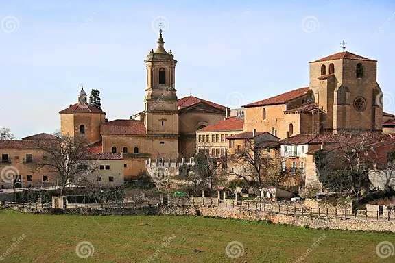
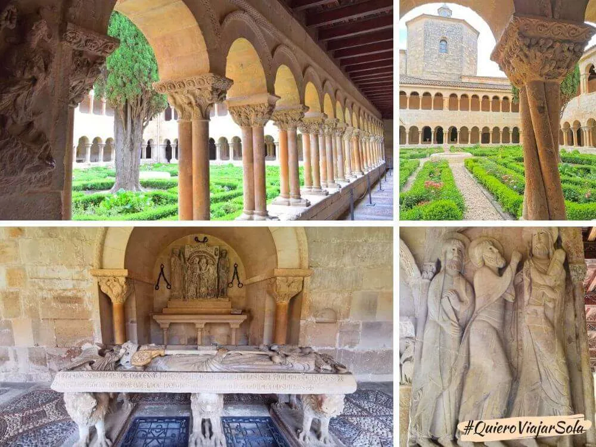
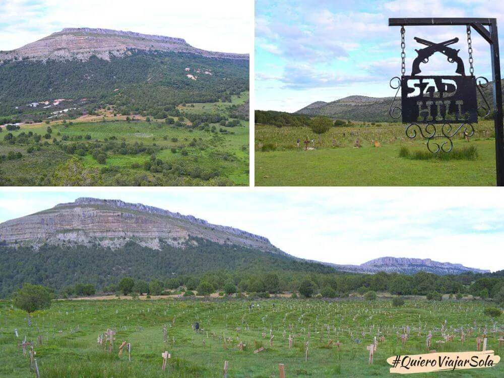
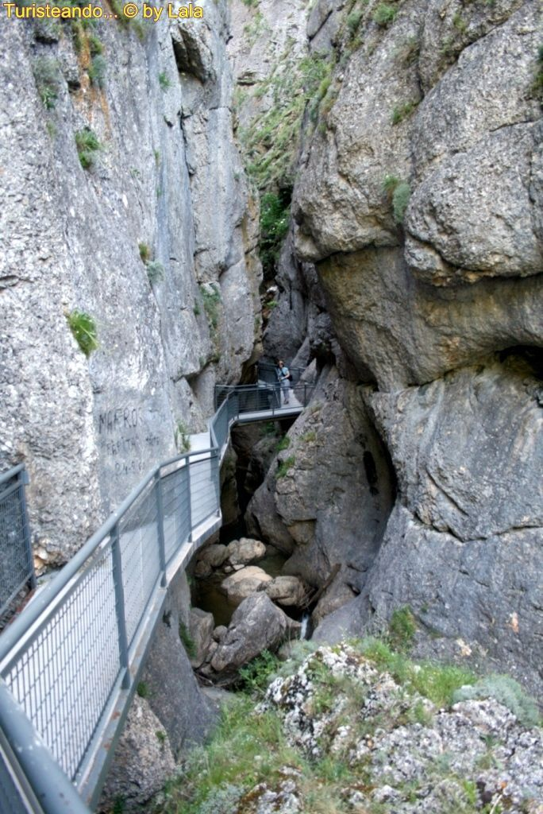

Santo Domingo de Silos
Santo Domingo de Silos es un municipio en la provincia de Burgos, Castilla y León, España. Conocido por su impresionante Monasterio de Santo Domingo de Silos, esta localidad es un referente del arte románico y la espiritualidad. Su famoso claustro, con sus capiteles esculpidos, es una obra maestra que transporta a los visitantes a siglos pasados.
Ubicado en el Triángulo del Arlanza, junto a Lerma y Covarrubias, Silos es un destino que combina historia, naturaleza y cultura. Además del monasterio, destacan el Desfiladero de la Yecla, un impresionante paso natural entre rocas, y el Cementerio de Sad Hill, famoso por su aparición en la película El bueno, el feo y el malo.
La localidad también es conocida por su tradición monástica y el canto gregoriano, que aún hoy se puede escuchar en el monasterio. Si buscas un lugar donde la historia y la tranquilidad se entrelacen, Santo Domingo de Silos es una opción perfecta. 🏰🎶

3 actividades en Santo Domingo de Silos
1.Monasterio de Santo Domingo de Silos

2.Cementerio de Sad Hill

3.Desfiladero de la Yecla

Dónde está y cómo llegar a Santo Domingo de Silos desde Burgos
La ruta más rápida y eficiente por carretera desde Burgos a Santo Domingo de Silos, la distancia es de 59 kilómetros y la duración aproximada del viaje es de 53 minutos.
|
social-icons